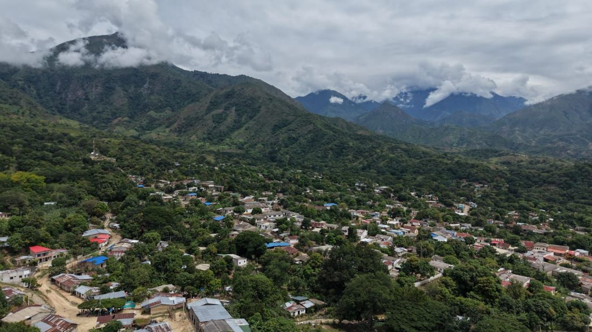
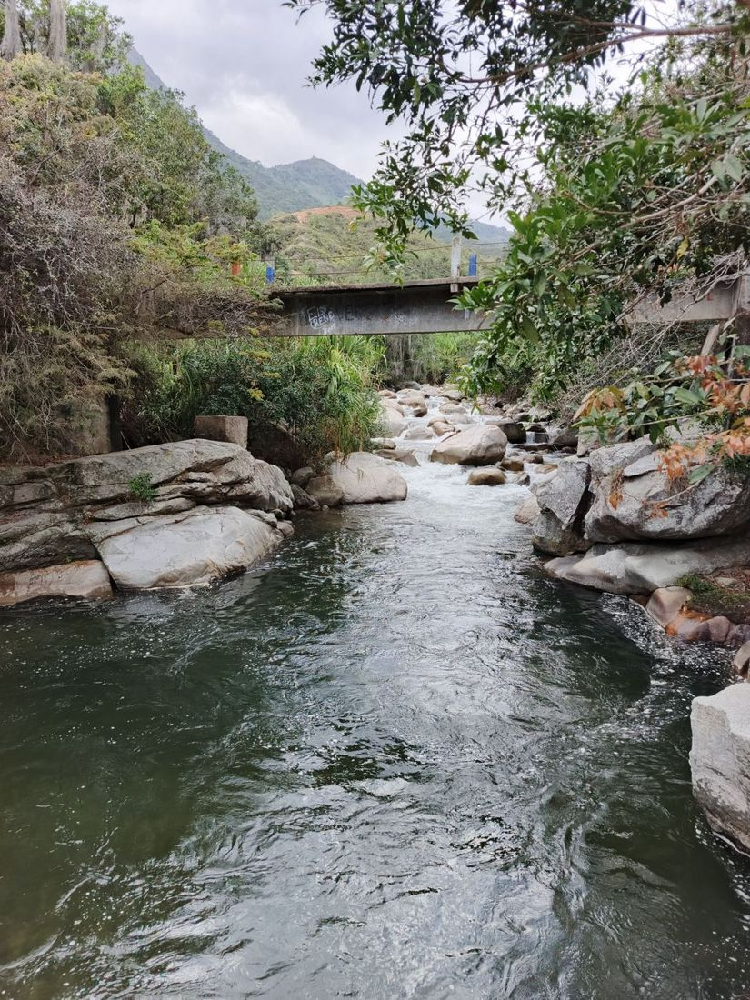
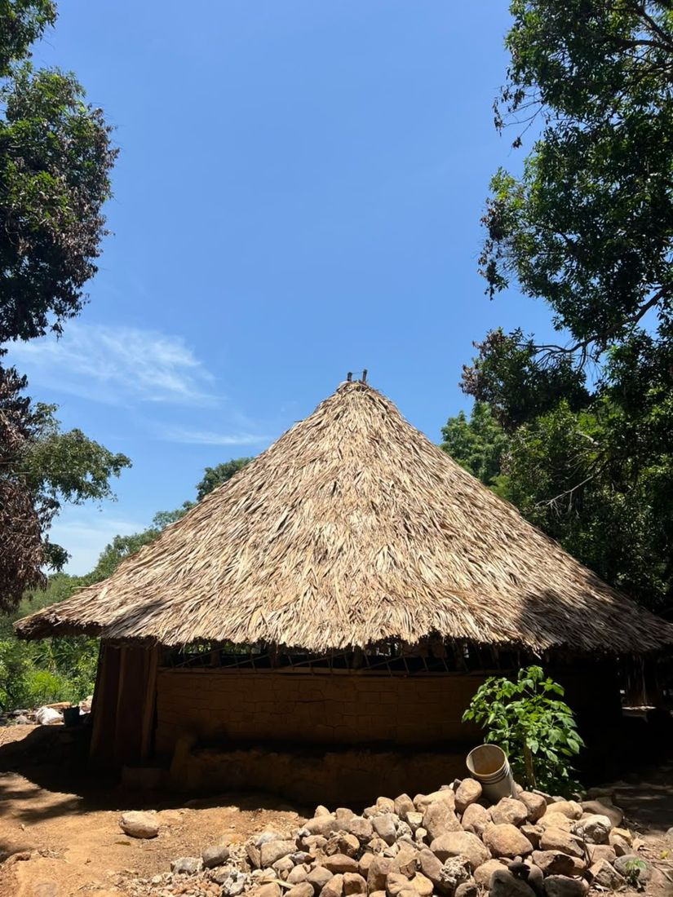
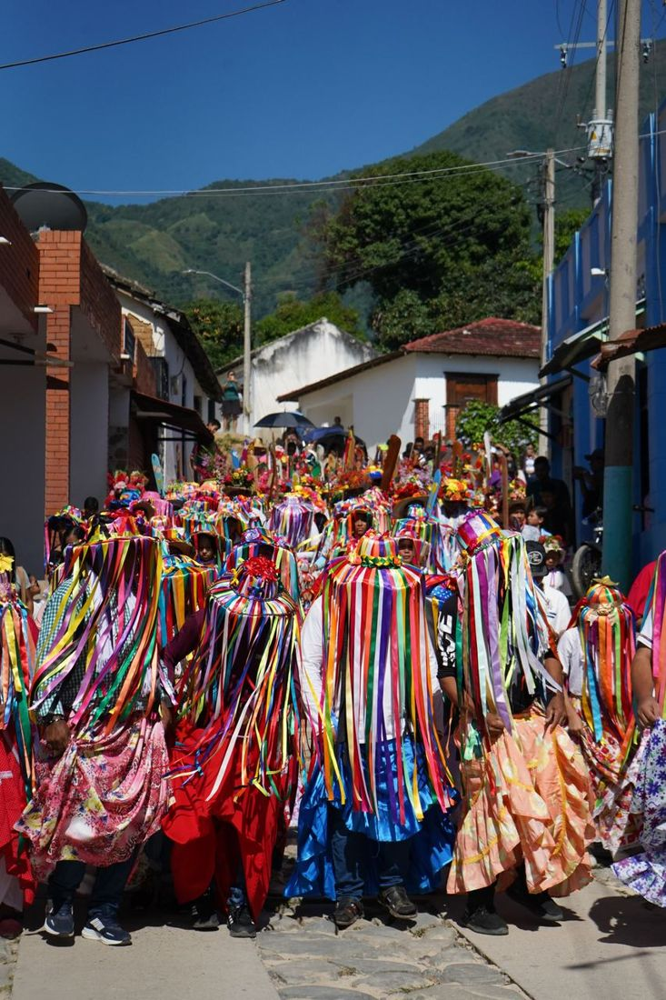

Una mañana
Caminata por Atánquez
Calles empedradas entre dos ríos, el Chiscuinlla y el Candela. Caminamos despacio, probamos la panela atanquera y el pueblo se va contando solo.
Mochilas tejidas por las mujeres de mi pueblo y recorridos por el territorio conmigo: soy Enosh Arias, El Atánquero, y llevo años contando la Sierra en video, foto, radio y pódcast.
El chipire es la base de la mochila: la primera puntada, un punto del que sale todo lo demás. De ahí en adelante el hilo sube en espiral y no se cierra hasta la boca. Por eso una mochila bien tejida no tiene costura: no hay por dónde abrirla.
Soy Enosh Arias, kankuamo de Atánquez, la capital del resguardo, en la Sierra Nevada de Santa Marta. Soy comunicador de mi pueblo: dirijo el pódcast El Mochilón de la Sierra, el programa Voces Kankuamas en Tayrona Stereo, y desde @elatanquero llevo años mostrando la Sierra desde adentro — los cuatro pueblos, el nacimiento del Guatapurí, la panela atanquera, la palabra de los mayores.
Así lo dicen las tejedoras: tejer es tejer el pensamiento. El cuerpo de la mochila es donde suben los dibujos, puntada por puntada, sin patrón impreso — van en la cabeza de quien teje y cuentan de qué familia viene: el caracol, el peine, los cerritos. La fibra — fique o lana de oveja — se tiñe con lo que da el monte: dividivi, batatilla, palo brasil.
La gasa es la correa de la mochila: se teje aparte, con otra puntada, y es la parte que toca el cuerpo — la que deja cargarla al hombro. Un recorrido es igual: no es ver Atánquez desde afuera, es cargarlo — un momento que se va contigo.

Calles empedradas entre dos ríos, el Chiscuinlla y el Candela. Caminamos despacio, probamos la panela atanquera y el pueblo se va contando solo.

Baja directo de la Sierra, con el agua fría y cristalina. Caminamos su orilla, nos damos un baño y entendemos por qué es un río sagrado.

Nos sentamos a escuchar a los mayores: la cosmovisión, la resistencia y la memoria del pueblo kankuamo, contadas por quien las vivió.

La fiesta grande de mi pueblo: diablos de espejos y campanas, negros del palenque y cucambas danzando en la calle la pelea del bien y el mal.
Un recorrido se cuadra conversando: cuéntame cuándo vienes, cuántos son y qué quieres vivir, y yo armo el camino. También a la medida, para universidades y colectivos.
Cuadremos tu recorridoLlevo años contando la Sierra en video, foto, radio y pódcast. Esto es lo que voy tejiendo en El Mochilón TV y en @elatanquero: el territorio, las tejedoras, las fiestas y la palabra de los mayores.
La boca de la mochila nunca se cose: se recoge, y se vuelve a abrir. Esto queda igual — abierto. Escríbeme si quieres cuadrar un recorrido o preguntar por una mochila.